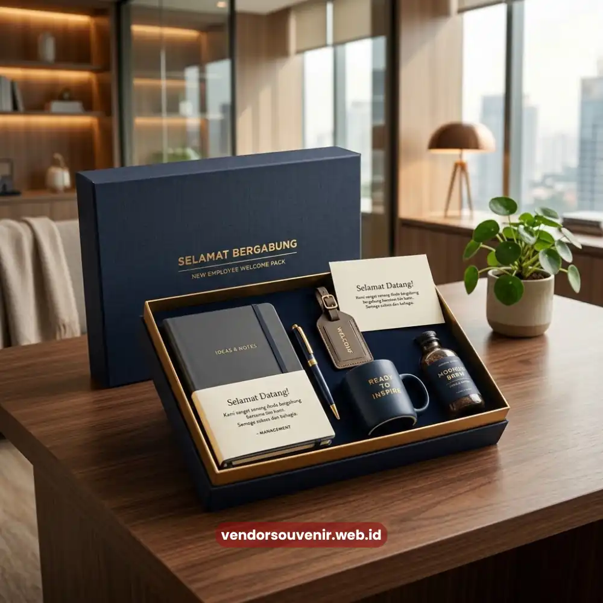

Daftar Isi
Welcome pack kantor adalah paket sambutan berisi kumpulan barang fungsional dan bermakna yang diberikan perusahaan kepada karyawan baru pada hari pertama kerja.
Paket ini penting karena menjadi titik sentuh pertama yang membentuk kesan awal karyawan terhadap budaya dan nilai perusahaan.
Bagi tim HR, welcome pack kantor bukan sekadar hadiah, melainkan investasi strategis untuk mempercepat proses onboarding dan menumbuhkan rasa memiliki sejak awal.
Di tengah persaingan merebut talenta terbaik, cara sebuah perusahaan menyambut karyawan barunya sering kali menjadi pembeda yang tidak disadari oleh manajemen.
Karyawan yang merasa dihargai sejak hari pertama cenderung lebih cepat beradaptasi, lebih terikat secara emosional dengan tempat kerjanya, dan lebih terbuka untuk berkontribusi maksimal.
Welcome pack kantor menjadi salah satu instrumen paling sederhana namun berdampak untuk mencapai kondisi tersebut.
- Welcome pack kantor membentuk kesan pertama karyawan terhadap perusahaan.
- Paket sambutan yang tepat mempercepat proses adaptasi dan onboarding.
- Isi welcome pack dapat disesuaikan dengan identitas dan budaya perusahaan.
- Investasi pada welcome pack kantor berkontribusi pada retensi karyawan jangka panjang.
- Vendor Souvenir menyediakan solusi welcome pack kantor yang dapat dipesan sesuai kebutuhan.
Apa Itu Welcome Pack Kantor dan Mengapa Menjadi Elemen Onboarding Penting?
Welcome pack kantor secara sederhana dapat diartikan sebagai kumpulan barang yang disiapkan perusahaan untuk diserahkan kepada karyawan baru sebagai bagian dari proses onboarding.
Isinya bervariasi, mulai dari alat tulis, tumbler, tas kerja, hingga dokumen panduan perusahaan yang dikemas rapi dalam satu paket.
Elemen ini menjadi penting karena onboarding bukan sekadar proses administratif pengisian dokumen kepegawaian.
Onboarding adalah momentum psikologis di mana karyawan baru membentuk persepsi awal tentang lingkungan kerjanya.
Ketika perusahaan menyiapkan welcome pack dengan matang, pesan yang tersampaikan adalah bahwa organisasi memperhatikan detail dan menghargai kehadiran setiap individu baru.
Selain itu, welcome pack kantor juga berfungsi praktis.
Barang-barang yang disertakan biasanya adalah kebutuhan kerja sehari-hari, sehingga karyawan baru tidak perlu repot menyiapkan sendiri di minggu pertama.
Fungsi praktis ini menambah nilai guna yang membuat welcome pack terasa lebih dari sekadar formalitas.

Welcome Pack Kantor Karyawan Baru
Bagaimana Welcome Pack Kantor Membentuk Budaya Kerja Positif Sejak Hari Pertama?
Welcome pack kantor membentuk budaya kerja positif dengan cara menghadirkan pengalaman emosional yang konsisten dengan nilai perusahaan sejak menit pertama karyawan menginjakkan kaki di kantor.
Ketika desain, warna, dan pesan pada paket tersebut selaras dengan identitas merek, karyawan secara tidak langsung mulai memahami karakter organisasi tempat mereka bekerja.
Budaya kerja tidak dibangun dari satu momen besar, melainkan dari akumulasi pengalaman kecil yang konsisten.
Momen menerima welcome pack adalah salah satu pengalaman kecil tersebut, namun dampaknya dapat bertahan lama dalam ingatan karyawan.
Banyak perusahaan melaporkan bahwa karyawan baru yang menerima sambutan hangat cenderung lebih cepat merasa nyaman berdiskusi dengan rekan kerja dan atasan.
Lebih jauh, welcome pack kantor juga dapat menjadi sarana memperkenalkan nilai-nilai perusahaan secara halus.
Misalnya melalui pemilihan barang ramah lingkungan yang mencerminkan komitmen keberlanjutan, atau melalui pesan personal dari pimpinan yang diselipkan dalam paket.
Apa Saja Manfaat Welcome Pack Kantor bagi Perusahaan dan Karyawan?
Manfaat welcome pack kantor dapat dirasakan oleh dua sisi sekaligus, yaitu perusahaan dan karyawan itu sendiri, secara langsung maupun jangka panjang.
Bagi perusahaan, welcome pack kantor membantu memperkuat citra sebagai tempat kerja yang profesional dan peduli terhadap kesejahteraan karyawan.
Studi mengenai pengalaman karyawan yang dipublikasikan berbagai lembaga riset SDM secara umum menunjukkan bahwa proses onboarding yang terstruktur.
Termasuk pemberian welcome pack, berkorelasi dengan tingkat retensi karyawan yang lebih baik pada periode kerja awal.
Selain itu, welcome pack yang dibranding dengan logo perusahaan turut berfungsi sebagai media promosi internal maupun eksternal saat karyawan menggunakannya di luar kantor.
Bagi karyawan, manfaatnya lebih bersifat emosional dan praktis.
Secara emosional, mereka merasa disambut dan dihargai.
Secara praktis, barang-barang dalam welcome pack membantu memenuhi kebutuhan kerja tanpa harus membeli sendiri di hari-hari awal yang biasanya sudah padat dengan berbagai orientasi dan pelatihan.
Kapan Waktu Terbaik Memberikan Welcome Pack Kantor kepada Karyawan Baru?
Waktu yang tepat untuk memberikan welcome pack kantor adalah pada hari pertama karyawan bekerja, idealnya sebelum karyawan tersebut memulai rangkaian orientasi.
Pemberian di momen ini memastikan kesan pertama yang positif langsung terbentuk sebelum karyawan menjalani aktivitas kerja lainnya.
Sebagian perusahaan bahkan memilih untuk mengirimkan welcome pack lebih awal, yaitu sebelum tanggal mulai kerja resmi, sebagai bentuk sambutan pra-onboarding.
Pendekatan ini banyak diterapkan pada perusahaan yang menerapkan sistem kerja hybrid atau remote, di mana welcome pack dikirim ke alamat rumah karyawan agar tetap merasa terhubung dengan tim meskipun belum bertemu langsung.
Ketepatan waktu ini penting karena penundaan pemberian welcome pack dapat mengurangi dampak psikologis yang seharusnya dirasakan pada momen krusial hari pertama bekerja.
Bagaimana Cara Memilih Welcome Pack Kantor yang Sesuai dengan Identitas Perusahaan?
Memilih welcome pack kantor yang tepat memerlukan pertimbangan terhadap identitas merek, budaya kerja, dan kebutuhan fungsional karyawan sehari-hari.
Perusahaan perlu memastikan setiap barang yang dipilih mencerminkan citra yang ingin dibangun, baik dari segi kualitas material maupun desain visual seperti warna dan logo.
Selain aspek visual, pertimbangan fungsional juga tidak kalah penting.
Barang yang dipilih sebaiknya benar-benar relevan dengan aktivitas kerja karyawan, sehingga tidak berakhir sebagai barang yang jarang digunakan.
Kombinasi antara nilai estetika, kualitas, dan fungsi inilah yang membuat welcome pack kantor benar-benar berkesan.
Untuk mempermudah proses ini, banyak perusahaan memilih bekerja sama dengan penyedia souvenir korporat yang berpengalaman dalam merancang paket sambutan sesuai kebutuhan spesifik masing-masing organisasi.
Termasuk penyesuaian logo, warna, dan jenis barang yang diperlukan.

Konsultasikan Kebutuhan Welcome Pack Perusahaan Anda di Vendor Souvenir
Welcome pack kantor adalah elemen sederhana yang berdampak besar terhadap pembentukan budaya kerja positif sejak hari pertama karyawan bergabung.
Melalui perpaduan nilai emosional dan fungsional, paket ini membantu perusahaan membangun kesan profesional sekaligus mempercepat proses adaptasi karyawan baru.
Pertanyaan yang Sering Diajukan (FAQ)
Apa saja isi standar welcome pack kantor?
Isi welcome pack kantor umumnya terdiri dari alat tulis, tumbler atau botol minum, tas kerja, notebook, dan dokumen panduan perusahaan, meskipun kombinasinya dapat disesuaikan dengan kebutuhan dan anggaran masing-masing organisasi.
Apakah welcome pack kantor wajib menggunakan logo perusahaan?
Penggunaan logo perusahaan sangat dianjurkan karena membantu memperkuat identitas merek dan memberi kesan profesional, meskipun secara teknis welcome pack tetap dapat diberikan tanpa branding khusus.
Berapa anggaran yang wajar untuk welcome pack kantor?
Anggaran welcome pack kantor sangat bervariasi tergantung jenis barang, jumlah item, dan tingkat kustomisasi yang dipilih, sehingga sebaiknya disesuaikan dengan kebijakan internal masing-masing perusahaan.
Apakah welcome pack kantor hanya untuk karyawan tetap?
Welcome pack kantor dapat diberikan kepada seluruh jenis status kepegawaian, termasuk karyawan kontrak dan magang, sebagai bentuk penyambutan yang setara di lingkungan kerja.
Bagaimana cara memesan welcome pack kantor secara custom?
Perusahaan dapat menghubungi penyedia souvenir korporat seperti Vendor Souvenir untuk berkonsultasi mengenai pilihan barang, desain, dan proses produksi sesuai kebutuhan dan tenggat waktu yang diinginkan.
Maroon Souvenir
Partner Corporate Gift terpercaya di Indonesia. Berpengalaman melayani ratusan perusahaan sejak 2018.
Lihat Portofolio Kami